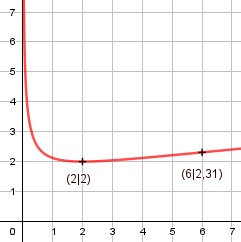

Aufgabe 128 f(x) = (x 2) * (2x)-0,5 x + 2 f(x) = ------- x ≠ 0 (2x)0,5 Produktregel erste Ableitung: u = x + 2, u' = 1 v = (2x)-0,5 Kettenregel: v' = -0,5 * 2 * (2x)-1,,5 = -(2x)-1,5 f'(x) = 1* (2x)-0,5 - (2x)-1,5 * (x + 2) 1 x + 2 f'(x) = --------- - ---------- (2x)0,5 (2x)1,5 1 x + 2 f'(x) = -------- * (1 - --------) (2x)0,5 2x 1 2x - x - 2 f'(x) = --------- * (------------) (2x)0,5 2x f'(x) = (x - 2) * (2x)-1,5 Produktregel zweite Ableitung: u = x - 2, u' = 1 v = (2x)-1,5 Kettenregel: v' = (-1,5) * 2 * (2x)-2,5 = -3 * (2x)-2,5 f''(x) = 1*(2x)-1,5 + (-3) * (22)-2,5 * (x - 2) 1 3x - 6 f''(x) = --------- - ---------- (2x)1,5 (2x)2,5 1 3x - 6 f''(x) = -------- * (1 - ---------) (2x)1.5 2x 1 2x - 3x + 6 f''(x) = --------- * (---------------) (2x)1,5 2x 6 - x f''(x) = --------- (2x)2,5 Zur Beurteilung, ob f'''(x) ≠ 0: (Begründung siehe Aufgabe 105) u = 6 - x, u' = -1 u' -1 f'''(x) = --- = ---------- ≠ 0 für alle x > 0 v (2x)2.5 2x muss ≥ 0 sein, wegen Quadratwurzel. 2x ≥ 0 |:2 x ≥ 0 Polstellen, Nenner = 0: (2x)0,5 = 0 |2 2x = 0 |:2 x = 0 Nenner = 0 und Zähler = 0 + 2 = 2 ≠ 0 --> senkrechte Asymptote Definitionsbereich: 0 < x < ∞ Verhalten im Unendlichen: x + 2 x + 2 f(x) = --------- = --------- (2x)0,5 √2*√x x 2 f(x) = --------- + ------- √2*√x √2*√x √x √2 f(x) = ------ + ----- geht gegen ∞ für x --> ∞ √2 √x Wertebereich: f(x) wird dann am kleinsten, wenn x = 2 (Extrempunkt) 2 + 2 4 f(2) = ------------ = --- = 2 --> 2 ≤ f(x) < ∞ (2 * 2)0,5 2 Symmetrie: f(-x) = (-x + 2) * (2(-x))-0,5 f(-x) = (-x + 2) * (-2x)-0,5 ≠ f(x) --> keine Achsensymmetrie -f(-x) = -(-x + 2) * (2(-x))-0,5 ≠ f(x) -f(-x) = (x - 2) * (-2x)-0,5 ≠ f(x) --> keine Punktsymmetrie Nullstellen: f(x) = 0 (x + 2) * (2x)-0,5 = 0 x + 2 = 0 | -2 x1 = -2 --> außerhalb des Definitionsbereiches --> keine Nullstelle (2x)-0,5 = 0 x2 = 0 --> außerhalb des Definitionsbereiches --> keine Nullstelle Schnittpunkt mit der y-Achse: x = 0 f(x) = (0 + 2) * (2*0)-0,5 2 f(x) = 0 * ------ nicht definiert 00,5 --> kein Schnittpunkt mit der y-Achse Extrempunkte: f'(x) = 0 x - 2 f'(x) = --------- = 0 |*(2x)-1,5 (2x)1,5 x - 2 = 0 |+2 x = 2 f(2) = (x + 2) * (2 * 2)-0,5 = 2 6 - 2 f''(2) = ------------- > 0 --> Tiefpunkt(2|2) (2 * 2)2,5 Wendepunkte: f''(x) = 0 6 - x f''(x) = --------- = 0 |*(2x)2,5 (2x)2,5 6 - x = 0 |+x x = 6 f(6) = (6 + 2) * (2 * 6)-0,5 = 2,31, f'''(6) ≠ 0 --> Wendepunkt (6|2,31) Graph:
